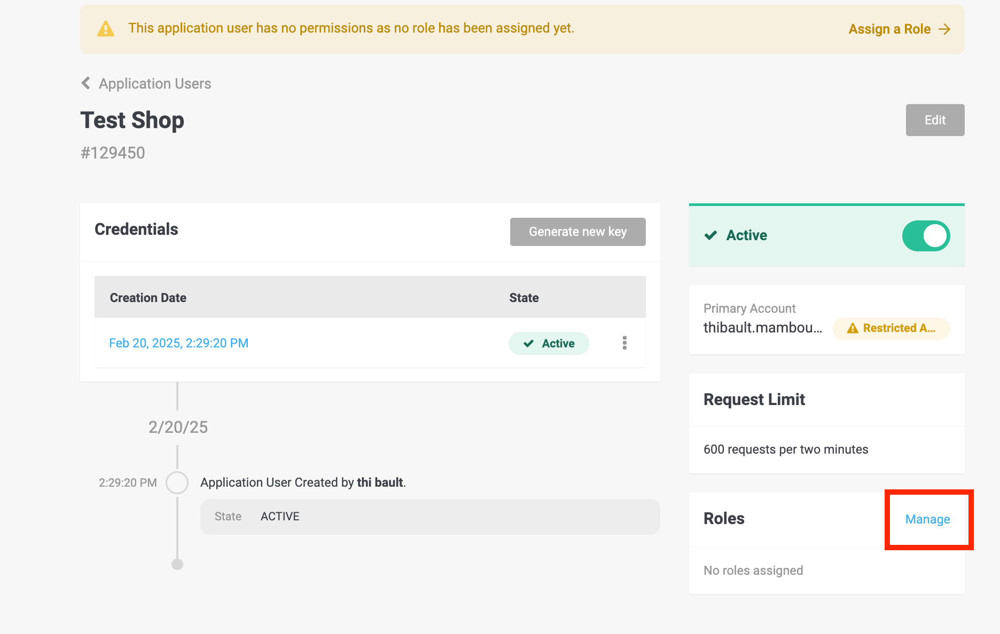
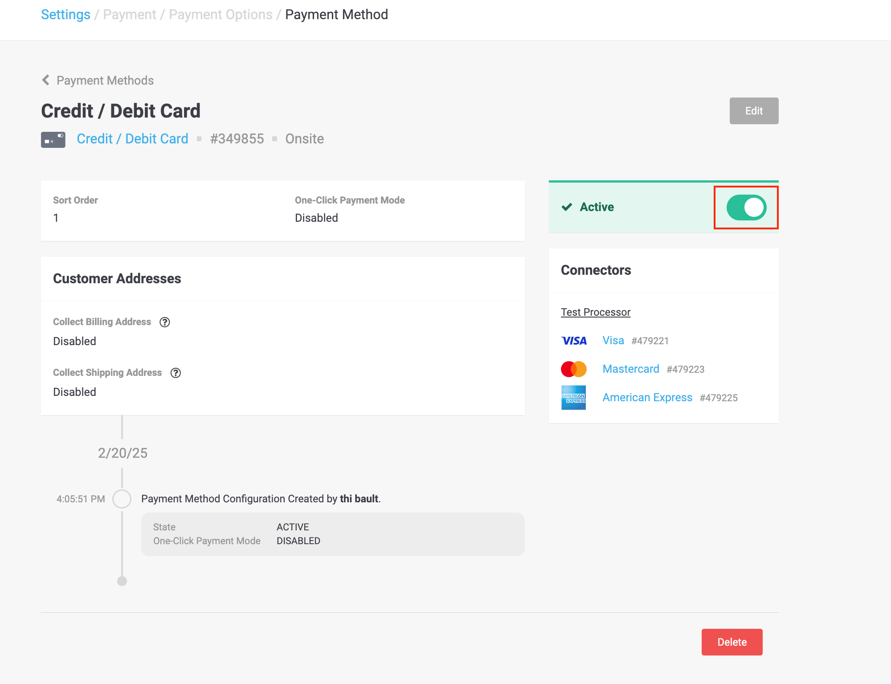

PostFinance Checkout Shopware 6 Documentation
Documentation
1Panoramica
Il Wallee Payment Plugin integra l’elaborazione moderna dei pagamenti in Shopware 6, offrendo funzionalità come pagamenti basati su iFrame, rimborsi, acquisizioni e conformità PCI. Supporta l’integrazione perfetta con il [Portale PostFinance Checkout](https://checkout.postfinance.ch/) per la gestione delle transazioni e dei metodi di pagamento.
Importante: Si prega di notare che solo gli aggiornamenti Major (ad es. 6.x.0.0) e Minor (ad es. 6.0.x.0) saranno testati per la compatibilità entro 2 settimane dal rilascio.
2Requisiti
Versione di Shopware: 6.5.x o 6.6.x (vedere la tabella di compatibilità).
PHP: Versione minima richiesta dalla vostra installazione di Shopware (ad es. 7.4+).
Account Wallee: Ottenere Space ID, User ID e API Key dal Pannello di Controllo Wallee..
3Compatibilità
Shopware Version |
Plugin Version |
PHP Version |
Support Until |
6.6.x |
6.x.x |
PHP 8.2 and 8.3 |
Ongoing |
6.5.x - Deprecated |
5.x.x |
PHP 8.2 and 8.3 |
October 2024 |
4Installazione
4.1Tramite il Marketplace
-
Accedete al backend del vostro negozio Shopware.
-
Navigate su Impostazioni → Sistema → Plugin.
-
Cliccate sul simbolo del menu a tendina e selezionate il link Installa del plugin per installarlo
-
Attivate il plugin Wallee Payment dal Gestore Plugin.
4.2Tramite Composer (Raccomandato)
-
Navigate nella directory principale del vostro Shopware.
-
Eseguite:
composer require postfinancecheckout/shopware-6 php bin/console plugin:refresh php bin/console plugin:install --activate --clearCache PostFinanceCheckoutPayment
4.3Installazione manuale
-
Scaricate l’ultima versione..
-
Estraete il file ZIP in
custom/plugins/ -
Eseguite
php bin/console plugin:refresh php bin/console plugin:install --activate --clearCache PostFinanceCheckoutPayment
5Guida Rapida al Portale
Andate su PostFinance Checkout e create un account se non ne avete già uno.
|
Tip
|
Selezionate il piano di abbonamento appropriato: dovrebbe supportare le transazioni di e-commerce. |
5.1Create la chiave API:
-
Una volta attivato il vostro account, navigate su Account → Utenti Applicazione.
-
Cliccate su Crea utente dell’aplicazione

-
Specificate un nome per questa chiave API – io inserirò Test Shop – e cliccate su Crea utente dell’applicazione.

-
Il vostro Utente dell’Applicazione verrà quindi creato. Copiate l’ID Utente e la Chiave di Autenticazione, poiché vi serviranno per collegare il vostro negozio al portale.

-
Infine, dovrete concedere alcune autorizzazioni a questo Utente Applicazione in modo che possa comunicare con il vostro space. Per farlo, sotto Ruoli, navigate su Gestisci.
 -
Cliccate sul segno + accanto a Ruoli Spazio.

-
Aggiungete il ruolo Space Admin e cliccate su Assegna Ruolo .
TipSi prega di notare che il caricamento dei ruoli potrebbe richiedere alcuni secondi 
-
Infine, cliccate su Salva i Ruoli; dovrete inserire la vostra password per confermare.
5.2Configurate i Metodi di Pagamento
Ora potete configurare i metodi di pagamento che desiderate avere; per scopi di test, utilizzeremo il Processore Fittizio (Bogus Processor). Si prega di notare che se desiderate eseguire transazioni di produzione, potete utilizzare la nostra offerta Payfac o connettervi direttamente a uno specifico PSP (Worldline; ACI; …).
-
Navigate su Spazio → Impostazioni e cliccate su Processori.
-
Cliccate su Configura processore
-
Selezionate il processore che desiderate e cliccate su Continua.

-
Impostate il nome che desiderate dare al vostro processore – ad es. Test Processor – e cliccate su Crea.

-
Selezionate tutti i Connettori applicabili e cliccate su Salva
TipSi prega di notare che i connettori sembrano duplicati, ma è perché uno è per il pagamento tramite terminale fisico e l’altro per il pagamento e-commerce. 
I metodi di pagamento sono ora disponibili nel portale
6Guida Rapida al Shop
-
Credenziali API
-
Navigate su Shopware Admin → Impostazioni → Estensioni → PostFinance Checkout Payment e cliccate su Salva.
-
Inserite il vostro Space ID, User ID, e API Key
-
Potete trovare lo Space ID navigando su Spazio – ad es. Space id = 76231

-
-
-
Metodi di Pagamento
I metodi di pagamento disponibili al checkout sono gestiti dal [Portale PostFinance Checkout](https://checkout.postfinance.ch/). Se desiderate disabilitare un metodo di pagamento, dovrete disabilitarlo dal portale.
NoteSi prega di notare che, poiché esiste una sincronizzazione tra il portale e il shop, potete fare la stessa cosa dal shop in Impostazioni → Metodi di Pagamento. -
Andate su Space → Impostazioni → Pagamento → Modalita di pagamento

-
Selezionate il metodo di pagamento che desiderate disabilitare. Cliccate sul cursore per disabilitarlo → dovrebbe diventare inattivo.
 Tip
TipSe desiderate disabilitare solo un Connettore da un Metodo di Pagamento (ad es. Mastercard per una Carta di Credito), andate alla sezione Connettore
-
-
Opzioni
-
Space View Id: Questo campo vi permette di applicare stili personalizzati al modulo di pagamento e alla pagina di pagamento. Lo stile è definito nelle impostazioni del vostro Spazio nel Portale
NoteSi prega di notare che se non utilizzate lo Space View Id, questa opzione dovrebbe rimanere vuota. -
Integrazione: L’impostazione Opzioni di Integrazione determina come viene visualizzato il modulo di pagamento durante il processo di checkout. Sono disponibili le seguenti opzioni:
-
IFrame: Incorpora il modulo di pagamento direttamente all’interno della pagina di checkout di Shopware per un’esperienza senza interruzioni.
-
Lightbox: Apre una finestra popup sicura in cui i clienti possono completare il pagamento senza lasciare la pagina di checkout.
-
Payment Page: Reindirizza i clienti a una pagina di pagamento dedicata ospitata dal fornitore di servizi di pagamento.
-
-
Line Item Consistency: Shopware calcola le tasse a livello di voce di riga, il che può comportare piccole discrepanze (tipicamente pochi centesimi) tra l’imposta totale dell’ordine e il prezzo visualizzato. Questa discrepanza si verifica a causa di differenze di arrotondamento durante i calcoli delle singole voci di riga. Se l’impostazione "Imponi coerenza" è abilitata, il portale rifiuterà automaticamente gli ordini con tali discrepanze. Per evitare problemi di elaborazione dei pagamenti, si consiglia di disabilitare questa impostazione a meno che non sia richiesta una rigorosa convalida del totale delle imposte.
-
Invia Email di Conferma Ordine: Abilitate questa opzione per inviare email di conferma dell’ordine direttamente da Shopware anziché dal Portale.

-
7Grafico dello Stato della Transazione
Il processo di pagamento di Wallee è completamente standardizzato per ogni metodo di pagamento che potete elaborare. Questo vi dà la possibilità di aggiungere semplicemente un metodo di pagamento o un processore senza modifiche all’interno della vostra configurazione di Shopware. Una panoramica degli stati e dei processi di pagamento di Wallee è disponibile nella Documentazione sui Pagamenti.
Nella sezione seguente, forniamo una panoramica di come gli stati di Wallee sono mappati nel grafico degli stati di Shopware per gli ordini e gli stati di pagamento.
7.1Mappatura degli Stati degli Ordini di Shopware
Attualmente non modifichiamo lo stato dell’Ordine. Modifichiamo solo lo stato del Pagamento e lo stato della Spedizione.
7.1.1Osservazioni Generali Riguardo agli Stati degli Ordini
Raccomandiamo di modificare lo stato dell’Ordine solo quando lo stato del Pagamento ha raggiunto uno stato finale.
7.2Mappatura dello Stato di Pagamento di Shopware
Di seguito trovate un diagramma che mostra la macchina a stati di Shopware per lo stato di pagamento, incluse informazioni aggiuntive per le transizioni di stato.
-
Se la transazione è
Authorizedin PostFinance Checkout, lo stato di pagamento dell’ordine di Shopware è contrassegnato comeIn Progress. -
Se la transazione fallisce prima o durante il processo di autorizzazione, lo stato di pagamento dell’ordine di Shopware è contrassegnato come
Failed. -
Se la transazione fallisce dopo l’autorizzazione, lo stato di pagamento dell’ordine di Shopware è contrassegnato come
Cancelled. -
Se la fattura della transazione in PostFinance Checkout è contrassegnata come Paid o Not Applicable, the lo stato di pagamento dell’ordine di Shopware è contrassegnato come Paid.
7.2.1Osservazioni Generali Riguardo agli Stati di Pagamento
Raccomandiamo di non modificare manualmente lo stato di pagamento. Se lo fate, potrebbe essere modificato nuovamente dal plugin.
7.3Mappatura dello Stato di Spedizione di Shopware
Di seguito trovate un diagramma che mostra la macchina a stati di Shopware per lo stato di spedizione, incluse informazioni aggiuntive per le transizioni di stato.
-
Se la transazione ha lo stato
Confirmedin PostFinance Checkout, lo stato di spedizione dell’ordine di Shopware è contrassegnato comeOn Hold.. -
Se la transazione in PostFinance Checkout è contrassegnata come
Fulfill, lo stato di spedizione dell’ordine di Shopware è contrassegnato comeOpen. -
Se la transazione è in stato
Decline,FailedorVoided, lo stato di spedizione dell’ordine di Shopware è contrassegnato comeCancelled.
8Gestione delle Transazioni
Potete acquisire, annullare e rimborsare le transazioni direttamente dal backend di Shopware. Si prega di notare che se rimborsate, annullate o acquisite transazioni all’interno di PostFinance Checkout, gli eventi verranno sincronizzati in Shopware. Tuttavia, ci sono alcune limitazioni (vedere sotto).
8.1Completare (Acquisire) un Ordine
YAvete la possibilità che per le vostre transazioni il pagamento venga autorizzato solo dopo l’inserimento dell’ordine. All’interno della configurazione del connettore avete l’opzione, se il metodo di pagamento lo supporta, di definire se il pagamento debba essere completato immediatamente o differito.
Per acquisire una transazione, aprite l’ordine e cliccate sul pulsante Complete.
|
Note
|
Quando il completamento è in sospeso in Wallee, l’ordine rimarrà nello stato "in sospeso". |

Completamento Differito del Pagamento
I rivenditori spesso si trovano nella situazione in cui desiderano solo autorizzare le transazioni e avviare il processo di evasione solo quando tutti gli articoli sono spedibili. Questo è possibile anche con PostFinance Checkout.
Tuttavia, è necessario seguire determinati processi. Se avete configurato il completamento del pagamento come differito, dovreste acquisire la transazione prima di avviare la spedizione, poiché può sempre accadere che un completamento fallisca. Se volete essere sicuri di non spedire articoli per i quali non siete stati pagati, dovreste posticipare la spedizione fino al raggiungimento dello stato di evasione. Inizialmente, la transazione sarà nello stato Authorized in PostFinance Checkout e In Progress in Shopware. Se desiderate avviare il processo di evasione, assicuratevi di avviare il processo di completamento come descritto sopra. Una volta che il completamento è andato a buon fine, l’ordine passerà allo stato Fulfill in PostFinance Checkout e allo stato Paid in Shopware. Ora potete avviare il processo di evasione.
8.2Annullare una transazione
Per annullare una transazione, apri l’ordine e clicca sul pulsante Cancel authorization.
|
Note
|
Puoi annullare solo le transazioni che non sono ancora state completate |

8.3Rimborso di una Transazione
Avete la possibilità di rimborsare le transazioni già completate. Per farlo, aprite l’ordine acquisito. Cliccando sui 3 punti (…) su una voce di riga, potete rimborsare la voce di riga parzialmente (se ha una quantità superiore a 1) o potete rimborsare l’intera voce di riga. Nel caso in cui il metodo di pagamento non supporti i rimborsi, non vedrete la possibilità di emettere rimborsi online.

Potete effettuare tutti i rimborsi individuali che desiderate fino a raggiungere l’importo totale dell’ordine originale. Lo stato dell’ordine passerà quindi automaticamente a "completato".
|
Note
|
Potrebbe volerci un po' di tempo prima che vediate il rimborso in Shopware. I rimborsi saranno visibili solo una volta che saranno stati elaborati con successo. |
8.4Ordini in Attesa
La spedizione non dovrebbe essere effettuata mentre lo stato di spedizione è Hold. Questo accade quando la transazione in Wallee non ha raggiunto lo stato di evasione.
Ci sono essenzialmente due motivi per cui questo può accadere:
-
La transazione non è completata. In questo caso, dovete completare la transazione come scritto sopra.
-
Non siamo in grado di dire se dovete evadere l’ordine. La decisione di spedizione viene presa automaticamente. Se ciò non accade entro il periodo di tempo definito, Wallee genererà un’attività manuale che dovreste osservare e seguire le istruzioni.
Potete trovare maggiori informazioni sulle attività manuali nella nostra Documentazione sulle Attività Manuali..
8.5Limitazioni della Sincronizzazione tra Wallee e Shopware
Si prega di notare che le acquisizioni, le annullazioni e i rimborsi effettuati in Wallee vengono sincronizzati. Tuttavia, ci sono alcune limitazioni. All’interno di Wallee, potete modificare contemporaneamente il prezzo unitario e la quantità. Questo non può essere fatto nel backend di Shopware. Raccomandiamo pertanto di effettuare sempre i rimborsi all’interno del backend di Shopware e non all’interno di Wallee. Se un rimborso non può essere sincronizzato, verrà inviato al processore, ma potrebbe essere che non lo vediate all’interno del vostro backend di Shopware.
Potete trovare maggiori informazioni sui Rimborsi in Wallee nella nostra Documentazione sui Rimborsi..
8.6Tokenization
INel caso in cui il metodo di pagamento supporti la tokenizzazione, potete memorizzare i dettagli di pagamento dei vostri clienti per acquisti futuri. Per utilizzare questa funzionalità, assicuratevi che la Modalità di One-Click-Payment Mode inella configurazione del vostro metodo di pagamento sia impostata su allow o force.
|
Note
|
La tokenizzazione non è disponibile per i checkout degli ospiti. |
8.7Key Features
-
iFrame Integration: Incorpora i moduli di pagamento direttamente nel tuo checkout.
-
Refunds & Captures: Attiva rimborsi totali/parziali e acquisizioni da Shopware o dal Portale PostFinance Checkout.
-
Multi-Store Support: Gestisci le configurazioni su più negozi.
-
Automatic Updates: I metodi di pagamento si sincronizzano dinamicamente tramite l’API PostFinance Checkout.
8.8Risoluzione dei Problemi
-
Logs: Controlla i log dei pagamenti con:
tail -f var/log/whitelabelname_payment*.log -
Problemi Comuni:
-
Assicurati che
composer update whitelabelname/shopware-6venga eseguito dopo gli aggiornamenti. -
Verifica che le credenziali API corrispondano al tuo account PostFinance Checkout.
-
8.9FAQs
D: Come posso essere sicuro che la connessione tra il portale e il negozio funzioni?
R: Dovrete verificare se i webhook sono stati creati correttamente. Per farlo, navigate nel vostro space all’interno del portale, andate su Impostazioni → Generale → Webhook Listener.


D: Questo plugin supporta i one-click payments?
R: Sì, tramite tokenizzazione nel portale PostFinance Checkout.
D: Come gestisco la conformità PCI?
R: Il plugin utilizza l’integrazione iFrame, riducendo i requisiti PCI a SAQ-A.
D: Il plugin supporta Apple Pay?
R: Sì, il plugin supporta wallet come Apple Pay.
9Changelog
Per gli aggiornamenti specifici della versione, consultate le Release di GitHub.
10Contribuzione
Segnalate i problemi tramite le Issue di GitHub.
Seguite la Guida Base per lo Sviluppo di Plugin per Shopware.
11Support
se hai bisogno di aiuto contatta il nostro supporto.